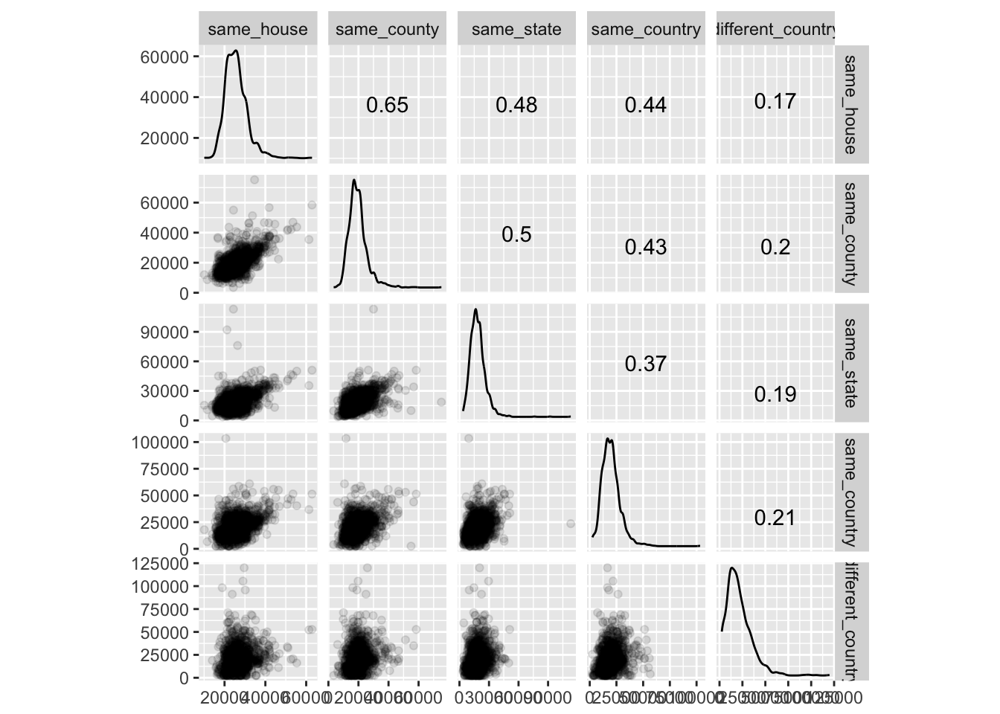

Lecture 5 ggplot2 Extensions
5.1 Data
For this section, we’ll look at data from the American Community Survey (ACS) on immigration. To download the data,
- Go to the American FactFinder website.
- Click on the “Download Center” section, then click the “DOWNLOAD CENTER” button.
- Click the “NEXT” button, since we know the table we want to download.
- Select “American Community Survey” from the Program dropdown.
- Select “2015 ACS 5-year estimates”, click the “ADD TO YOUR SELECTIONS” button, then click “NEXT”
- Select “County - 050” from the geographic type dropdown, then select “All Counties within United States”, click the “ADD TO YOUR SELECTIONS” button, then click “NEXT”
- Type
income mobilityin the “topic or table name”" search box, then select the option that reads:
“B07011: MEDIAN INCOME IN THE PAST 12 MONTHS (IN 2015 INFLATION-ADJUSTED DOLLARS) BY GEOGRAPHICAL MOBILITY IN THE PAST YEAR FOR CURRENT RESIDENCE IN THE UNITED STATES”
Click “GO”, then check the checkbox beside the table we found. Now click on the “Download” button, and uncheck the option that says, “Include descriptive data element names.” Click “Ok” to create your zip file. Once the file has been created, click “DOWNLOAD” to download the zip file.
The following will assume you moved the following files within the zip to your data folder:
- ACS_15_5YR_B07011_with_ann.csv
- ACS_15_5YR_B07011_metadata.csv
The file ACS_15_5YR_B07011.txt tells us how to interpret codes within our data. It is possible for median values to be followed by a + or - if they are in the upper or lower open-ended interval. In our dataset we don’t have any medians in the upper open-ended interval, but we do have entries in the lower open-ended interval.
library(readr)
acs <- read_csv("data/ACS_15_5YR_B07011_with_ann.csv", col_types = strrep("c", 15), na = c("-", "(X)"))
meta <- read_csv("data/ACS_15_5YR_B07011_metadata.csv")
meta## # A tibble: 14 × 2
## GEO.id
## <chr>
## 1 GEO.id2
## 2 GEO.display-label
## 3 HD01_VD02
## 4 HD02_VD02
## 5 HD01_VD03
## 6 HD02_VD03
## 7 HD01_VD04
## 8 HD02_VD04
## 9 HD01_VD05
## 10 HD02_VD05
## 11 HD01_VD06
## 12 HD02_VD06
## 13 HD01_VD07
## 14 HD02_VD07
## # ... with 1 more variables: Id <chr>Let’s keep only the variables we care about, using more informative variable names.
library(dplyr)
acs_mobility <- acs %>%
transmute(
geo = `GEO.display-label`,
same_house = HD01_VD03,
same_county = HD01_VD04,
same_state = HD01_VD05,
same_country = HD01_VD06,
different_country = HD01_VD07
)
acs_mobility## # A tibble: 1,949 × 6
## geo same_house same_county same_state same_country
## <chr> <chr> <chr> <chr> <chr>
## 1 Autauga County, Alabama 27553 18655 27643 35870
## 2 Barbour County, Alabama 17263 17363 8165 12667
## 3 Bibb County, Alabama 21489 16112 8804 <NA>
## 4 Butler County, Alabama 19499 11734 20769 23887
## 5 Chambers County, Alabama 20708 14522 21218 18516
## 6 Chilton County, Alabama 23668 20646 15739 33464
## 7 Clay County, Alabama 19201 18836 20596 11350
## 8 Cleburne County, Alabama 21888 11583 20380 16475
## 9 Coffee County, Alabama 24325 18957 11906 31702
## 10 Colbert County, Alabama 22419 18389 17330 20093
## # ... with 1,939 more rows, and 1 more variables: different_country <chr>Now we can add an indicator for whether the median value is in the lowest available interval. This would mean that the median value presented has been bottom-coded.
acs_mobility <- acs_mobility %>%
mutate(
same_country_bc = grepl("[0-9]*-", same_country),
different_country_bc = grepl("[0-9]*-", different_country)
)
acs_mobility## # A tibble: 1,949 × 8
## geo same_house same_county same_state same_country
## <chr> <chr> <chr> <chr> <chr>
## 1 Autauga County, Alabama 27553 18655 27643 35870
## 2 Barbour County, Alabama 17263 17363 8165 12667
## 3 Bibb County, Alabama 21489 16112 8804 <NA>
## 4 Butler County, Alabama 19499 11734 20769 23887
## 5 Chambers County, Alabama 20708 14522 21218 18516
## 6 Chilton County, Alabama 23668 20646 15739 33464
## 7 Clay County, Alabama 19201 18836 20596 11350
## 8 Cleburne County, Alabama 21888 11583 20380 16475
## 9 Coffee County, Alabama 24325 18957 11906 31702
## 10 Colbert County, Alabama 22419 18389 17330 20093
## # ... with 1,939 more rows, and 3 more variables: different_country <chr>,
## # same_country_bc <lgl>, different_country_bc <lgl>Let’s see how many counties have observations that are bottom coded:
acs_mobility %>%
summarize(same_country_bc = sum(same_country_bc), different_country_bc = sum(different_country_bc), counties = n())## # A tibble: 1 × 3
## same_country_bc different_country_bc counties
## <int> <int> <int>
## 1 15 64 1949Let’s see what the typical bottom-coded values are:
acs_mobility %>%
filter(same_country_bc) %>%
select(same_country) %>%
table()## .
## 2,500-
## 15acs_mobility %>%
filter(different_country_bc) %>%
select(different_country) %>%
table()## .
## 2,500-
## 64In both cases the bottom-coded interval is the range from zero to 2,500. Since this is a small number of counties given the entire range, let’s simply set the bottom-coded values to equal the upper-bound of their interval (i.e., 2,500).
acs_mobility <- acs_mobility %>%
transmute(
geo = geo,
same_house = as.integer(same_house),
same_county = as.integer(same_county),
same_state = as.integer(same_state),
same_country = if_else(same_country_bc, 2500L, as.integer(same_country)),
different_country = if_else(different_country_bc, 2500L, as.integer(different_country))
)
acs_mobility## # A tibble: 1,949 × 6
## geo same_house same_county same_state same_country
## <chr> <int> <int> <int> <int>
## 1 Autauga County, Alabama 27553 18655 27643 35870
## 2 Barbour County, Alabama 17263 17363 8165 12667
## 3 Bibb County, Alabama 21489 16112 8804 NA
## 4 Butler County, Alabama 19499 11734 20769 23887
## 5 Chambers County, Alabama 20708 14522 21218 18516
## 6 Chilton County, Alabama 23668 20646 15739 33464
## 7 Clay County, Alabama 19201 18836 20596 11350
## 8 Cleburne County, Alabama 21888 11583 20380 16475
## 9 Coffee County, Alabama 24325 18957 11906 31702
## 10 Colbert County, Alabama 22419 18389 17330 20093
## # ... with 1,939 more rows, and 1 more variables: different_country <int>Let’s rearrange the data into tidy format (one observation per row).
library(tidyr)
tidy_acs <- acs_mobility %>%
gather(location_last_year, median_income, -geo, factor_key = TRUE)
tidy_acs## # A tibble: 9,745 × 3
## geo location_last_year median_income
## <chr> <fctr> <int>
## 1 Autauga County, Alabama same_house 27553
## 2 Barbour County, Alabama same_house 17263
## 3 Bibb County, Alabama same_house 21489
## 4 Butler County, Alabama same_house 19499
## 5 Chambers County, Alabama same_house 20708
## 6 Chilton County, Alabama same_house 23668
## 7 Clay County, Alabama same_house 19201
## 8 Cleburne County, Alabama same_house 21888
## 9 Coffee County, Alabama same_house 24325
## 10 Colbert County, Alabama same_house 22419
## # ... with 9,735 more rows5.2 ggplot2 extensions
There are many extensions the community have made that build on ggplot2. The following link provides a gallery of many of these extensions:
Some others that are usefull are ggjoy and GGally.
5.3 ggjoy
Make sure ggjoy is installed.
install.packages("ggjoy")ggjoy gives us the ability to stack kernel density plots.
library(ggjoy)
ggplot(tidy_acs, aes(x = median_income, y = location_last_year, group(location_last_year))) +
geom_joy() +
theme_joy()
This plot shows us that, on average, the distance moved in the past year is inversely related to median income.
5.4 scatterplot matrix (GGally::ggscatmat)
Make sure you have GGally installed.
install.packages("GGally")One particular library, GGally, has a great set of visualizations to extend those that come prebuilt with ggplot. One common visualization tool that is missing from ggplot is the scatterplot matrix. While base R provides splom() in the lattice library, GGally::ggpairs and GGally::ggscatmat pr ovide an easy tool to create a scatterplot matrix with ggplot2.
library(GGally)
acs_mobility %>%
as.data.frame() %>%
ggscatmat(columns = 2:ncol(.), alpha = 0.1)